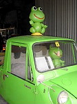
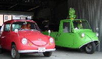
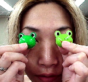
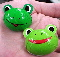

|
 謎の長崎カエルカーを撮影！【長崎発=長崎のかえらーの旦那様】長崎のかえらーの旦那でございます。いつも妻が投稿しています。
 地元の長崎では有名なのですが、長崎市内の自動車整備工場にある古い車で、国道沿いにある為すごく目立っています。 画面左側が「スバル360」で、右側が「マツダ360」で、まだ現役で活躍中との事でした。車の中にいるかえるちゃまもご覧いただけるかと思います。ここの事務所の出入り口の窓にも、慎重10センチほどのかえるがいましたので、きっと、かえる好きであるのだと、わたしはおもいます。
【全国かえる奉賛会】うわさの長崎かえる車の画像がついに到着しました。かえらーの旦那さま、投稿ありがとう。カエラーに劣らぬ活躍なりいい。貢献度大なので、勲章持っていって下さい！！それにしても、ぶったまげるなー。大王の車はカエル人形を車載しているものの、車そのものを緑に塗ったりはしていない。すごいぞー。
福岡かえる展開催決定！カエルガール結集！【全国かえる奉賛会】今年も６月６日のカエル記念日を祝祭するため、６月５日から１０日まで、福岡市中央区大名１丁目「エンジョイスペース大名」を会場に、記念日前後に『第３回福岡かえる展』を開催することが決定した。
戴帽式で新人カエルガールが誕生！この決定を受けて、かえる都市福岡市の各地では、『カエルガールになりたい！』と希望する少女たちが続出。全国かえる奉賛会の地元では、このほど、カエルガール志願者１名が、先輩カエルガールから、かえる帽をかぶせてもらう、カエル戴帽式に臨んだほか、うわさをききつけた、カエル主義に目覚めた中学生４人が、『私たちもカエルになりたいです』と直訴。４人が戴帽。【福岡発=新カエルガール・かえりん同志記者】かえる帽をかぶって町を歩くことは、幼いころからの夢でした。先輩のカエルガールに帽子をかぶせてもらったときは、これで、カエラーの真の一員になったと、大喜びです。カエルネームも『かえりん』と決まり、これから福岡かえる展に向かって驀進したいと思います。
４中学生！カエルガールJrに！【福岡発=カエルガールジュニア隊一同】いい感じでしたｏ（＾ｏ＾）ｏキャハハ♪ なんか夢のようでした。かえる帽子もめっちゃかわいいし！ みんなかなり気に入ってたんですよ！欲しいくらいです（●＾o＾●）
全国のカエラー少女は戴帽しよう！【全国かえる奉賛会】全国かえる奉賛会初の『カエルガールジュニア』隊まで結成し、今年の福岡かえる展もきっともりあがるであろうぞ。カエルガールの戴帽式とカエルガールジュニア結成の模様は、動画でも記録しているので、まずは画面をクリックしてみようではないかああああああ。
さー、全国のカエラー少女諸君！ためらっている時間はないぞ。いまこそ、かえる主義を広める街宣活動の尖兵として、職場で学校で、故郷で出稼ぎ先で、カエル帽をかぶって街頭や農村を歩き、カエル主義の素晴らしさを宣伝してまわろうではないかあああああああ。
便利なカエルなタオルかけ！【福岡発=茅姫様】部屋にひっそりとあったカエルのタオルかけです。カエル仲間がいないので、ちょっぴりさみしそうですけど、タオルを手にすると、にっこり笑うカエルが、優し気でなごみます。実用性も高いので、とってもおとくな気分です。手がすごくよごれていて、タオルが真っ黒になりそうなときは、ごめんねーカエル君！という気持ちかな。。
【全国かえる奉賛会】カエル用品は実用的なものが多いので、とっても便利ですよね。
 カエルチョコを発見！【福岡発=サルト様】カエルチョコを発見しました。小さなつぶタイプなんですが、同じ緑系統の色違いがあって、とっても気になって両方買いました。こうして目にあてると、カエルになれるのですが、皮をむいてチョコを食べるとかえるがなくなってしまうので、食べることができないのが悩みです。
 【全国かえる奉賛会】どんなカエルチョコも、食べると可哀想なので、困った悩みではある。大王もバレンタインの時にいただいたカエルチョコを食べれないでいるのです。モローストラップ増産！カエルサボテン近日発売【福岡発=走るかえる同志記者】けろテン市場で発売中の、モローストラップの購入ありがとう。売り切れた特定デザインに注文があったので、ただいま生産中です。注文したみなさん、しばらくお待ちを！！また、待望のカエルサボテンも近日発売です。
投稿採用者に武功カエル徽章を授与！ |
かえる古新聞過去に取り上げた記事を見出し付きで一覧したい人は、ここをクリック◆創刊号を見る◆先週号を見る◆話題の号を見る◆かえる新聞の昔を読む◆COOL NET FROG RANKING !
|
私も入っています。。全国かえる奉賛会
大王様に会うには、このバナーをクリック。ずっと奥に写真館があるぞ。全国かえる奉賛会に入会するには、自分のホームページのどこかに、下の部分を追加するとバナーがリンク付きで表示されるぞ。どんどん入会しましょー |


|